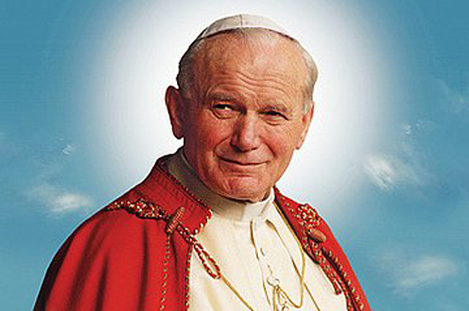

Jan Paweł II (łac. Ioannes Paulus PP. II), właśc. Karol Józef Wojtyła (ur. 18 maja 1920 w Wadowicach, zm. 2 kwietnia 2005 w Watykanie) –
polski duchowny rzymskokatolicki, biskup pomocniczy krakowski (1958–1964), a następnie arcybiskup metropolita krakowski (1964–1978),
kardynał (1967–1978), zastępca przewodniczącego Konferencji Episkopatu Polski (1969–1978), 264. papież i 6. Suweren Państwa Watykańskiego
(od 16 października 1978 do 2 kwietnia 2005), święty Kościoła katolickiego.